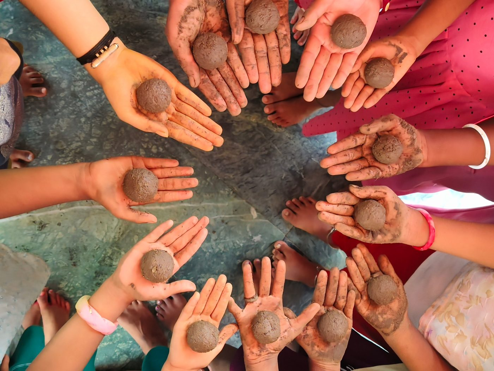
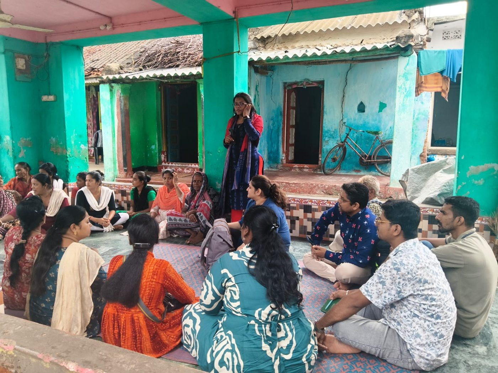
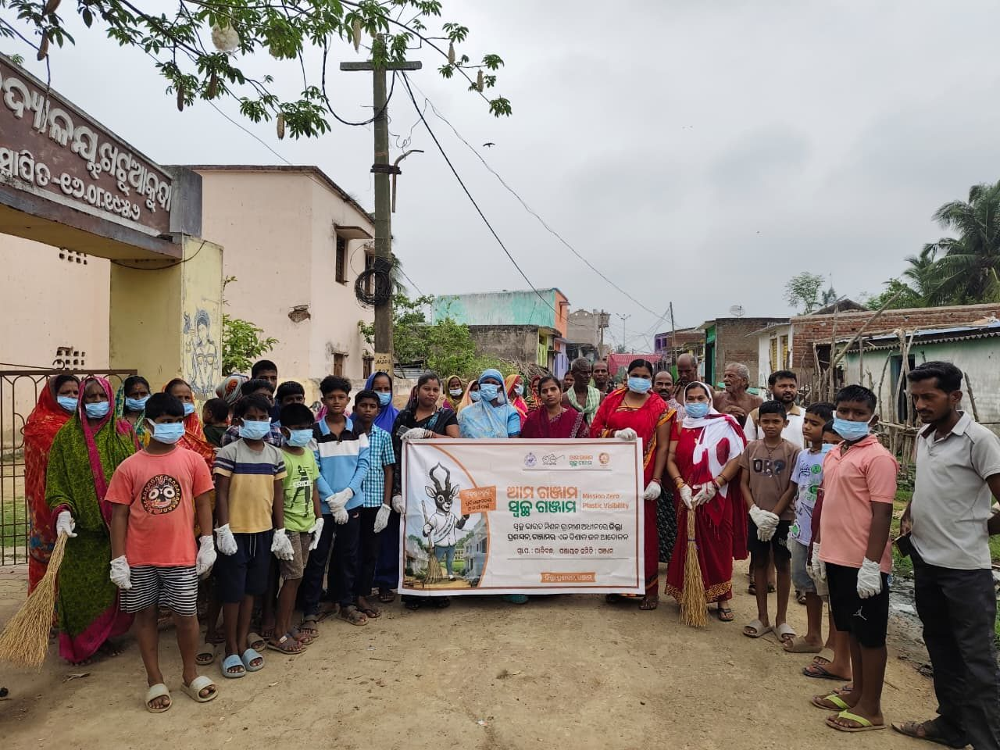
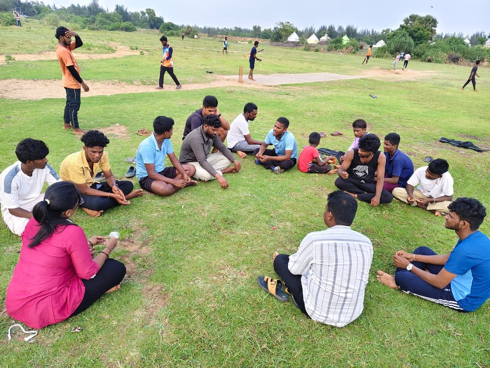
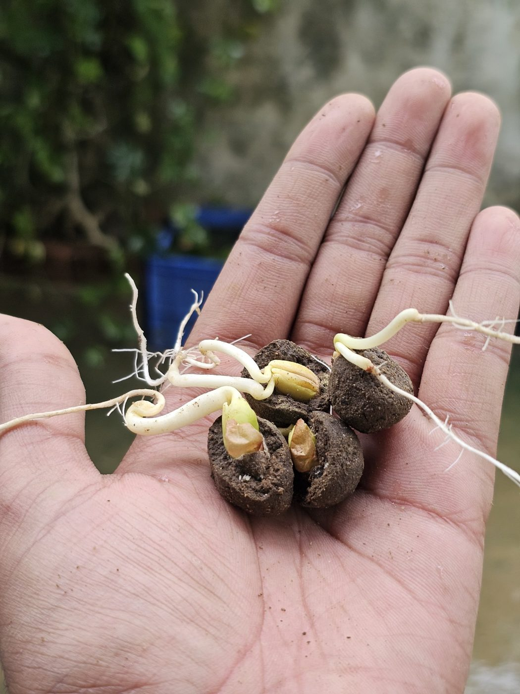

A coast under pressure
In the coastal villages of Podampeta, Purunabandha and Gokharkuda in Ganjam district, climate change, erosion, pollution and cyclones are wearing away the shoreline and the marine life that fishing families depend on. The Rushikulya coast nearby is one of the world's major nesting grounds for Olive Ridley sea turtles.
Young people as coastal guardians
Through its project Rising Tides, Rising Youth, Youth for Social Development (YSD), a grantee of the Inclusion Youth Fund, trains young people as Climate Champions and conservation leaders, and works with fishers, women and local institutions to look after the coast together.
What the project sets out to do
- Train young people as Climate Champions and conservation leaders
- Protect biodiversity and the coastal commons, including Olive Ridley nesting habitat along the Rushikulya coast
- Run beach clean-ups, mangrove restoration and awareness campaigns
- Build the skills of fishers, women and local institutions to manage the coast sustainably
- Strengthen community resilience through youth-led climate action and care for ecosystems
- Build a model for inclusive coastal resilience that can grow across Odisha
Barsha's journey
Barsharani Maharana, known as Barsha, grew up in Berhampur in a family of carpenters. Her father, conscious that the family's trade depends on cutting wood, plants trees almost every day, and taught her to care for the environment alongside earning a living. She began by planting trees herself, and has now worked on environmental protection for about seven years.
With Bharat Scouts and Guides she ran seed ball and restoration programmes in more than 20 schools, involving over 600 students, and has led more than 17 beach clean-up drives. She is now Climate Action Coordinator at Youth for Social Development, working on climate literacy, disaster risk reduction and youth leadership, while studying for a postgraduate degree in social work.
Under the Youth Fund
Through the Inclusion Youth Fund, supported by Restless Development, Barsha's passion has found direction, a platform and reach. Over the past few months she has:
- Led tree planting drives and environmental awareness campaigns
- Organised cleanliness campaigns in local communities
- Facilitated conservation activities with communities
- Engaged school and college students in environmental action
- Mobilised volunteers, youth groups and local communities around environmental protection
- Supported coastal conservation, including preparing Olive Ridley sea turtle eggs and placing them in hatcheries
By drawing her peers into this work, she has widened youth participation in conservation and community service, and shown how locally rooted leadership can carry climate action into everyday life.


Recognition
Barsha has received the Green Guardian Award from iVolunteer and UNICEF YuWaah, and an award from Bharat Scouts and Guides. Her work was featured in the Odia daily Sambad (Berhampur edition, 23 June 2026).
“Protecting nature is a collective responsibility, and everyone has a role in building a cleaner, greener future.”Barsharani Maharana, Climate Action Coordinator, Youth for Social Development
Her journey shows how investing in young, locally based leaders can turn individual commitment into community-wide change, and offers a model for youth-led climate action that is inclusive, grounded and lasting.